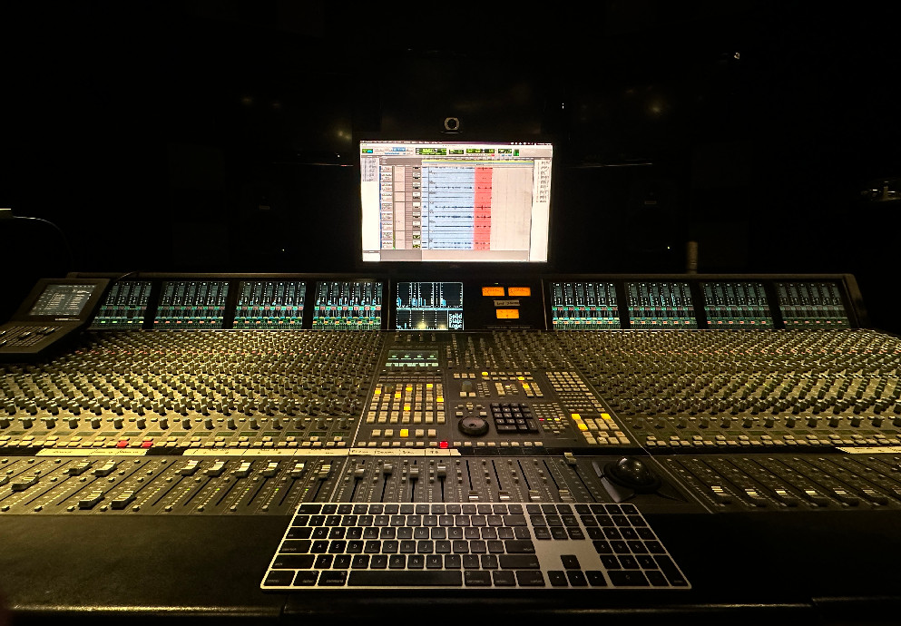

Nadia Othman resume work about

The Jazz Loft
2023
During summer 2023, I interned as a live recordist at The Jazz Loft, a jazz venue in Stony Brook, Long Island. I got to set up all recording equipment at my discretion, running the signal through a Behringer X Air mixer and my DAW to be mixed.
"If He Walked into My Life" by Jerry Herman, Performed by The Jazz Loft Big Band and Nicole Zuraitis
"Amad," Opb. Duke Ellington; Performed by The Jazz Loft Big Band
Studio Mixing & Recording
I also have experience recording and mixing in the studio. Below is an example called “Getcha Like” by Didi Onwuanyi, engineered and mixed alongside India Bonilla and Brianna Patane.

Audio for Video
I do sound design, ADR, editing, and mixing for visual content, primarily in Pro Tools. The following video is a totally fake advertisement for a totally fake YouTube channel, created by one of my NYU professors, which I was assigned to entirely sound design. I pulled various kitchen-related sounds from freesound.org and designed some of the musical sounds heard in Logic Pro, editing everything in Pro Tools.
Electroacoustic Composition: “Retroactive Interference”
2023
For my Electroacoustic Composition class at NYU Prague, a classmate and I teamed up to create a sound art piece made entirely from iPhone videos we had taken throughout our semester abroad. We pulled the audio from these videos and edited them in Pro Tools, altering them greatly to create soundscapes that varied from musical and rhythmic to ambient, mixing the piece for the 5.1 sound system which it was presented in. The following stereo mix doesn’t do the immersive experience justice.